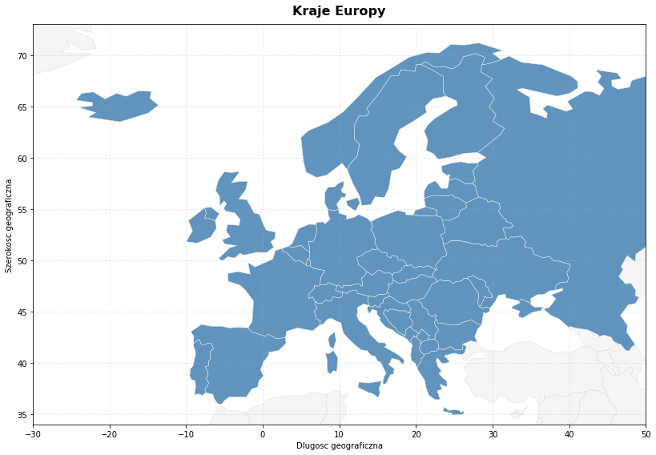
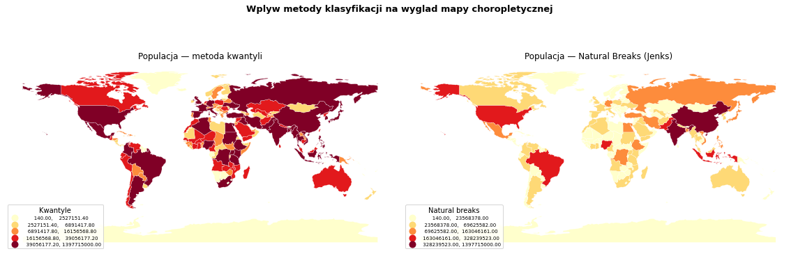
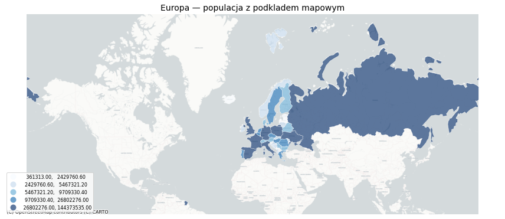
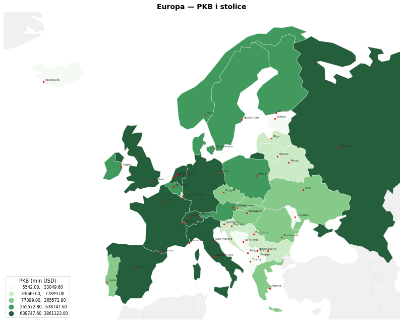
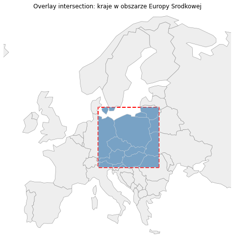
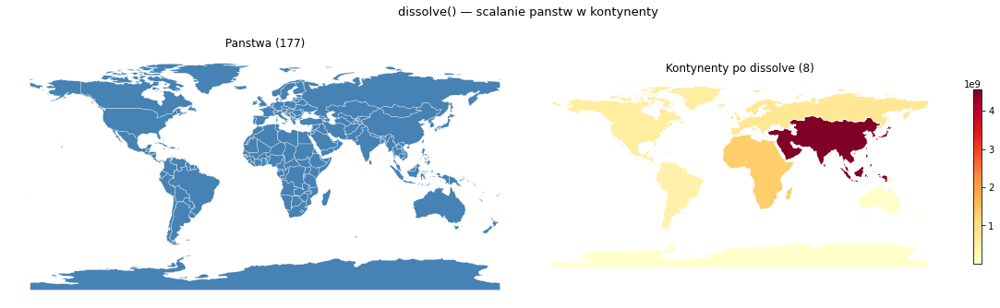
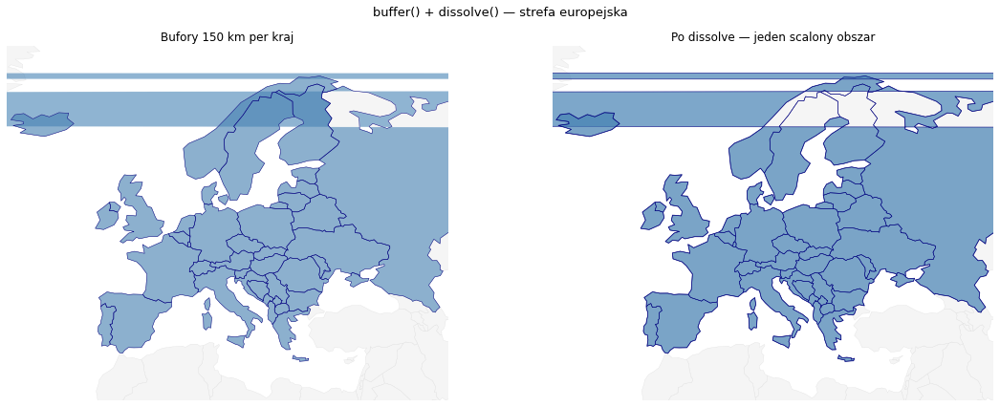

Wyklad 5: GeoPandas — analiza danych przestrzennych poza QGIS#
Programowanie w GIS — Kurs dla studentow I stopnia#
Kurs: Programowanie w GIS (QGIS)
Wyklad: 5 z 7
Tematy: GeoDataFrame | Wczytywanie i zapis | CRS | Wizualizacja | Operacje przestrzenne | GeoPandas vs PyQGIS
Wymagania wstepne: Python, podstawy Pandas, Wyklad 3
Czym jest ten wyklad#
Po trzech wykladach o PyQGIS robimy krok wstecz i patrzymy na dane przestrzenne z innej perspektywy. GeoPandas pozwala analizowac dane wektorowe calkowicie poza aplikacja QGIS — w Jupyterze, skryptach automatycznych, pipeline’ach danych i srodowiskach serwerowych.
Ten notatnik dziala bez QGIS — uruchamiaj wszystkie komorki tutaj, w Jupyter.
Instalacja#
pip install geopandas matplotlib contextily mapclassify
Spis tresci#
GeoPandas kontra PyQGIS — kiedy co uzyc
GeoDataFrame — struktura danych
Wczytywanie i zapis danych
Uklady wspolrzednych w GeoPandas
Filtrowanie i eksploracja atrybutow
Wizualizacja — od prostej mapy do choropletycznej
Operacje przestrzenne — overlay i spatial join
Dissolve — scalanie obiektow
Pomiary geometryczne
Podsumowanie i slownik pojec
1. GeoPandas kontra PyQGIS — kiedy co uzyc#
Zanim zaczniemy, odpowiedzmy na pytanie ktore pojawi sie u kazdego studenta: po co uczyc sie GeoPandas skoro mamy PyQGIS?
1.1 Fundamentalna roznica#
Cecha |
PyQGIS |
GeoPandas |
|---|---|---|
Wymaga QGIS |
Tak — dziala wewnatrz aplikacji |
Nie — czysty Python |
Interfejs |
Obiektowy (warstwy, obiekty) |
Tabelaryczny (DataFrame) |
Srodowisko |
Konsola QGIS, edytor skryptow |
Jupyter, terminal, serwer |
Wizualizacja |
Obszar mapy QGIS |
Matplotlib, wbudowana |
Integracja z data science |
Slaba |
Doskonala (Pandas, NumPy, scikit-learn) |
Dostep do Processing Toolbox |
Tak |
Nie |
Edycja projektu QGIS |
Tak |
Nie |
Automatyzacja na serwerze |
Trudna |
Naturalna |
1.2 Kiedy uzyc PyQGIS#
Pracujesz wewnatrz projektu QGIS i chcesz go modyfikowac.
Potrzebujesz algorytmow Processing Toolbox.
Tworzysz wtyczke z interfejsem graficznym.
Chcesz automatyzowac operacje na otwartym projekcie.
1.3 Kiedy uzyc GeoPandas#
Piszesz skrypt ktory ma dzialac bez uruchamiania QGIS.
Integrujesz dane przestrzenne z analiza danych (Pandas, Matplotlib, ML).
Budujesz pipeline danych na serwerze lub w Jupyter.
Chcesz szybko zbadac i zwizualizowac dane bez otwierania QGIS.
Pracujesz w srodowisku gdzie QGIS nie jest dostepny.
1.4 Odpowiedz#
Nie ma jednej lepszej opcji. Profesjonalny programista GIS zna oba narzedzia i wybiera odpowiednie do zadania. Czesto jedno uzupelnia drugie: GeoPandas do analizy i przygotowania danych, PyQGIS do tworzenia projektów z dobrą wizualizacją kartograficzną.
2. GeoDataFrame — struktura danych#
2.1 Co to jest GeoDataFrame#
GeoDataFrame to rozszerzenie DataFrame z biblioteki Pandas.
Dodaje do niego:
kolumne
geometryprzechowujaca ksztalty obiektow (Shapely),metody przestrzenne:
.to_crs(),.buffer(),.sjoin()i inne,atrybut
.crsopisujacy uklad wspolrzednych.
Kazdy wiersz to jeden obiekt przestrzenny — odpowiednik QgsFeature z PyQGIS.
2.2 Analogia PyQGIS — GeoPandas#
PyQGIS |
GeoPandas |
Rola |
|---|---|---|
|
|
Warstwa wektorowa |
|
Wiersz GeoDataFrame |
Pojedynczy obiekt |
|
|
Ksztalt obiektu |
|
Kolumny DataFrame |
Schemat atrybutow |
|
|
Uklad wspolrzednych |
|
|
Dostep do danych |
2.3 Podstawowa struktura#
GeoDataFrame:
name pop_est continent geometry
0 Poland 37958138 Europe MULTIPOLYGON(...)
1 Germany 83783942 Europe MULTIPOLYGON(...)
2 France 67391582 Europe MULTIPOLYGON(...)
... ... ... ...
^atrybuty^ ^geometria^
# Instalacja (odkomentuj jesli potrzebne)
# import subprocess, sys
# subprocess.check_call([sys.executable, '-m', 'pip', 'install',
# 'geopandas', 'matplotlib', 'contextily', 'mapclassify', '-q'])
import geopandas as gpd
import pandas as pd
import matplotlib.pyplot as plt
import warnings
warnings.filterwarnings('ignore')
print(f'GeoPandas: {gpd.__version__}')
print(f'Pandas : {pd.__version__}')
# Wczytaj wbudowany zbior danych
world = gpd.read_file("https://naciscdn.org/naturalearth/110m/cultural/ne_110m_admin_0_countries.zip")
print(f'\nTyp obiektu : {type(world)}')
print(f'Liczba wierszy: {len(world)}')
print(f'Kolumny : {list(world.columns)}')
print(f'CRS : {world.crs}')
print(f'Typ geometrii: {world.geom_type.unique()}')
GeoPandas: 1.0.1
Pandas : 1.4.2
Typ obiektu : <class 'geopandas.geodataframe.GeoDataFrame'>
Liczba wierszy: 177
Kolumny : ['featurecla', 'scalerank', 'LABELRANK', 'SOVEREIGNT', 'SOV_A3', 'ADM0_DIF', 'LEVEL', 'TYPE', 'TLC', 'ADMIN', 'ADM0_A3', 'GEOU_DIF', 'GEOUNIT', 'GU_A3', 'SU_DIF', 'SUBUNIT', 'SU_A3', 'BRK_DIFF', 'NAME', 'NAME_LONG', 'BRK_A3', 'BRK_NAME', 'BRK_GROUP', 'ABBREV', 'POSTAL', 'FORMAL_EN', 'FORMAL_FR', 'NAME_CIAWF', 'NOTE_ADM0', 'NOTE_BRK', 'NAME_SORT', 'NAME_ALT', 'MAPCOLOR7', 'MAPCOLOR8', 'MAPCOLOR9', 'MAPCOLOR13', 'POP_EST', 'POP_RANK', 'POP_YEAR', 'GDP_MD', 'GDP_YEAR', 'ECONOMY', 'INCOME_GRP', 'FIPS_10', 'ISO_A2', 'ISO_A2_EH', 'ISO_A3', 'ISO_A3_EH', 'ISO_N3', 'ISO_N3_EH', 'UN_A3', 'WB_A2', 'WB_A3', 'WOE_ID', 'WOE_ID_EH', 'WOE_NOTE', 'ADM0_ISO', 'ADM0_DIFF', 'ADM0_TLC', 'ADM0_A3_US', 'ADM0_A3_FR', 'ADM0_A3_RU', 'ADM0_A3_ES', 'ADM0_A3_CN', 'ADM0_A3_TW', 'ADM0_A3_IN', 'ADM0_A3_NP', 'ADM0_A3_PK', 'ADM0_A3_DE', 'ADM0_A3_GB', 'ADM0_A3_BR', 'ADM0_A3_IL', 'ADM0_A3_PS', 'ADM0_A3_SA', 'ADM0_A3_EG', 'ADM0_A3_MA', 'ADM0_A3_PT', 'ADM0_A3_AR', 'ADM0_A3_JP', 'ADM0_A3_KO', 'ADM0_A3_VN', 'ADM0_A3_TR', 'ADM0_A3_ID', 'ADM0_A3_PL', 'ADM0_A3_GR', 'ADM0_A3_IT', 'ADM0_A3_NL', 'ADM0_A3_SE', 'ADM0_A3_BD', 'ADM0_A3_UA', 'ADM0_A3_UN', 'ADM0_A3_WB', 'CONTINENT', 'REGION_UN', 'SUBREGION', 'REGION_WB', 'NAME_LEN', 'LONG_LEN', 'ABBREV_LEN', 'TINY', 'HOMEPART', 'MIN_ZOOM', 'MIN_LABEL', 'MAX_LABEL', 'LABEL_X', 'LABEL_Y', 'NE_ID', 'WIKIDATAID', 'NAME_AR', 'NAME_BN', 'NAME_DE', 'NAME_EN', 'NAME_ES', 'NAME_FA', 'NAME_FR', 'NAME_EL', 'NAME_HE', 'NAME_HI', 'NAME_HU', 'NAME_ID', 'NAME_IT', 'NAME_JA', 'NAME_KO', 'NAME_NL', 'NAME_PL', 'NAME_PT', 'NAME_RU', 'NAME_SV', 'NAME_TR', 'NAME_UK', 'NAME_UR', 'NAME_VI', 'NAME_ZH', 'NAME_ZHT', 'FCLASS_ISO', 'TLC_DIFF', 'FCLASS_TLC', 'FCLASS_US', 'FCLASS_FR', 'FCLASS_RU', 'FCLASS_ES', 'FCLASS_CN', 'FCLASS_TW', 'FCLASS_IN', 'FCLASS_NP', 'FCLASS_PK', 'FCLASS_DE', 'FCLASS_GB', 'FCLASS_BR', 'FCLASS_IL', 'FCLASS_PS', 'FCLASS_SA', 'FCLASS_EG', 'FCLASS_MA', 'FCLASS_PT', 'FCLASS_AR', 'FCLASS_JP', 'FCLASS_KO', 'FCLASS_VN', 'FCLASS_TR', 'FCLASS_ID', 'FCLASS_PL', 'FCLASS_GR', 'FCLASS_IT', 'FCLASS_NL', 'FCLASS_SE', 'FCLASS_BD', 'FCLASS_UA', 'geometry']
CRS : None
Typ geometrii: ['MultiPolygon' 'Polygon']
# Podglad danych — identycznie jak w Pandas
world.head(3)
| featurecla | scalerank | LABELRANK | SOVEREIGNT | SOV_A3 | ADM0_DIF | LEVEL | TYPE | TLC | ADMIN | ... | FCLASS_TR | FCLASS_ID | FCLASS_PL | FCLASS_GR | FCLASS_IT | FCLASS_NL | FCLASS_SE | FCLASS_BD | FCLASS_UA | geometry | |
|---|---|---|---|---|---|---|---|---|---|---|---|---|---|---|---|---|---|---|---|---|---|
| 0 | Admin-0 country | 1 | 6 | Fiji | FJI | 0 | 2 | Sovereign country | 1 | Fiji | ... | None | None | None | None | None | None | None | None | None | MULTIPOLYGON (((180 -16.06713, 180 -16.55522, ... |
| 1 | Admin-0 country | 1 | 3 | United Republic of Tanzania | TZA | 0 | 2 | Sovereign country | 1 | United Republic of Tanzania | ... | None | None | None | None | None | None | None | None | None | POLYGON ((33.90371 -0.95, 34.07262 -1.05982, 3... |
| 2 | Admin-0 country | 1 | 7 | Western Sahara | SAH | 0 | 2 | Indeterminate | 1 | Western Sahara | ... | Unrecognized | Unrecognized | Unrecognized | None | None | Unrecognized | None | None | None | POLYGON ((-8.66559 27.65643, -8.66512 27.58948... |
3 rows × 169 columns
# Typy danych w kazdej kolumnie
print(world.dtypes)
print()
# Kolumna geometry ma specjalny typ
print(f'Typ kolumny geometry: {world.geometry.dtype}')
print(f'Przyklad geometrii : {world.geometry[0].geom_type}')
print(f'WKT (fragment) : {world.geometry[0].wkt[:60]}...')
featurecla object
scalerank int32
LABELRANK int32
SOVEREIGNT object
SOV_A3 object
...
FCLASS_NL object
FCLASS_SE object
FCLASS_BD object
FCLASS_UA object
geometry geometry
Length: 169, dtype: object
Typ kolumny geometry: geometry
Przyklad geometrii : MultiPolygon
WKT (fragment) : MULTIPOLYGON (((180 -16.067132663642447, 180 -16.55521656663...
3. Wczytywanie i zapis danych#
3.1 Wczytywanie — read_file()#
gpd.read_file() czyta praktycznie kazdy format wektorowy:
Shapefile, GeoPackage, GeoJSON, KML, FlatGeobuf i wiele innych.
Pod spodem uzywa biblioteki Fiona (GDAL).
# GeoPackage
gdf = gpd.read_file('dane.gpkg')
# Konkretna warstwa z GeoPackage
gdf = gpd.read_file('dane.gpkg', layer='granice_gmin')
# GeoJSON (rowniez z URL!)
gdf = gpd.read_file('https://.../.../data.geojson')
# Shapefile
gdf = gpd.read_file('warstwa.shp')
# Tylko fragmenta danych — przyspiesza wczytywanie
gdf = gpd.read_file('dane.gpkg', rows=slice(0, 100))
gdf = gpd.read_file('dane.gpkg', bbox=(14, 49, 24, 55)) # tylko obszar
3.2 Zapis — to_file()#
# GeoPackage (zalecany)
gdf.to_file('wynik.gpkg', driver='GPKG')
# GeoJSON
gdf.to_file('wynik.geojson', driver='GeoJSON')
# Shapefile
gdf.to_file('wynik.shp') # domyslny driver
# Wiele warstw do jednego GeoPackage
gdf1.to_file('baza.gpkg', layer='panstwa', driver='GPKG')
gdf2.to_file('baza.gpkg', layer='stolice', driver='GPKG')
3.3 Tworzenie GeoDataFrame od podstaw#
from shapely.geometry import Point
gdf = gpd.GeoDataFrame(
{'nazwa': ['Wroclaw', 'Warszawa'],
'pop': [641000, 1794000]},
geometry=[Point(17.038, 51.108), Point(21.012, 52.230)],
crs='EPSG:4326'
)
import geopandas as gpd
from shapely.geometry import Point
import tempfile, os
# Wczytaj wbudowany zbior
world = gpd.read_file("https://naciscdn.org/naturalearth/110m/cultural/ne_110m_admin_0_countries.zip")
cities = gpd.read_file("https://naciscdn.org/naturalearth/110m/cultural/ne_110m_populated_places.zip")
print(f'Panstwa: {len(world)} obiektow')
print(f'Miasta : {len(cities)} obiektow')
print(f'Miasta — kolumny: {list(cities.columns)}')
print()
cities.head(5)
Panstwa: 177 obiektow
Miasta : 243 obiektow
Miasta — kolumny: ['SCALERANK', 'NATSCALE', 'LABELRANK', 'FEATURECLA', 'NAME', 'NAMEPAR', 'NAMEALT', 'NAMEASCII', 'ADM0CAP', 'CAPIN', 'WORLDCITY', 'MEGACITY', 'SOV0NAME', 'SOV_A3', 'ADM0NAME', 'ADM0_A3', 'ADM1NAME', 'ISO_A2', 'NOTE', 'LATITUDE', 'LONGITUDE', 'POP_MAX', 'POP_MIN', 'POP_OTHER', 'RANK_MAX', 'RANK_MIN', 'MEGANAME', 'LS_NAME', 'MAX_POP10', 'MAX_POP20', 'MAX_POP50', 'MAX_POP300', 'MAX_POP310', 'MAX_NATSCA', 'MIN_AREAKM', 'MAX_AREAKM', 'MIN_AREAMI', 'MAX_AREAMI', 'MIN_PERKM', 'MAX_PERKM', 'MIN_PERMI', 'MAX_PERMI', 'MIN_BBXMIN', 'MAX_BBXMIN', 'MIN_BBXMAX', 'MAX_BBXMAX', 'MIN_BBYMIN', 'MAX_BBYMIN', 'MIN_BBYMAX', 'MAX_BBYMAX', 'MEAN_BBXC', 'MEAN_BBYC', 'TIMEZONE', 'UN_FID', 'POP1950', 'POP1955', 'POP1960', 'POP1965', 'POP1970', 'POP1975', 'POP1980', 'POP1985', 'POP1990', 'POP1995', 'POP2000', 'POP2005', 'POP2010', 'POP2015', 'POP2020', 'POP2025', 'POP2050', 'MIN_ZOOM', 'WIKIDATAID', 'WOF_ID', 'CAPALT', 'NAME_EN', 'NAME_DE', 'NAME_ES', 'NAME_FR', 'NAME_PT', 'NAME_RU', 'NAME_ZH', 'LABEL', 'NAME_AR', 'NAME_BN', 'NAME_EL', 'NAME_HI', 'NAME_HU', 'NAME_ID', 'NAME_IT', 'NAME_JA', 'NAME_KO', 'NAME_NL', 'NAME_PL', 'NAME_SV', 'NAME_TR', 'NAME_VI', 'NE_ID', 'NAME_FA', 'NAME_HE', 'NAME_UK', 'NAME_UR', 'NAME_ZHT', 'GEONAMESID', 'FCLASS_ISO', 'FCLASS_US', 'FCLASS_FR', 'FCLASS_RU', 'FCLASS_ES', 'FCLASS_CN', 'FCLASS_TW', 'FCLASS_IN', 'FCLASS_NP', 'FCLASS_PK', 'FCLASS_DE', 'FCLASS_GB', 'FCLASS_BR', 'FCLASS_IL', 'FCLASS_PS', 'FCLASS_SA', 'FCLASS_EG', 'FCLASS_MA', 'FCLASS_PT', 'FCLASS_AR', 'FCLASS_JP', 'FCLASS_KO', 'FCLASS_VN', 'FCLASS_TR', 'FCLASS_ID', 'FCLASS_PL', 'FCLASS_GR', 'FCLASS_IT', 'FCLASS_NL', 'FCLASS_SE', 'FCLASS_BD', 'FCLASS_UA', 'FCLASS_TLC', 'geometry']
| SCALERANK | NATSCALE | LABELRANK | FEATURECLA | NAME | NAMEPAR | NAMEALT | NAMEASCII | ADM0CAP | CAPIN | ... | FCLASS_ID | FCLASS_PL | FCLASS_GR | FCLASS_IT | FCLASS_NL | FCLASS_SE | FCLASS_BD | FCLASS_UA | FCLASS_TLC | geometry | |
|---|---|---|---|---|---|---|---|---|---|---|---|---|---|---|---|---|---|---|---|---|---|
| 0 | 8 | 10 | 3 | Admin-0 capital | Vatican City | None | None | Vatican City | 1 | None | ... | None | None | None | None | None | None | None | None | None | POINT (12.45339 41.90328) |
| 1 | 7 | 20 | 0 | Admin-0 capital | San Marino | None | None | San Marino | 1 | None | ... | None | None | None | None | None | None | None | None | None | POINT (12.44177 43.9361) |
| 2 | 7 | 20 | 0 | Admin-0 capital | Vaduz | None | None | Vaduz | 1 | None | ... | None | None | None | None | None | None | None | None | None | POINT (9.51667 47.13372) |
| 3 | 6 | 30 | 8 | Admin-0 capital alt | Lobamba | None | None | Lobamba | 0 | Legislative and | ... | None | None | None | None | None | None | None | None | None | POINT (31.2 -26.46667) |
| 4 | 6 | 30 | 8 | Admin-0 capital | Luxembourg | None | None | Luxembourg | 1 | None | ... | None | None | None | None | None | None | None | None | None | POINT (6.13 49.61166) |
5 rows × 138 columns
import geopandas as gpd
from shapely.geometry import Point
import tempfile, os
# Tworzenie GeoDataFrame od podstaw
dane = [
('Wroclaw', 17.038, 51.108, 641000),
('Warszawa', 21.012, 52.230, 1794000),
('Krakow', 19.945, 50.065, 779000),
('Gdansk', 18.646, 54.352, 470000),
('Poznan', 16.929, 52.407, 545000),
('Lodz', 19.455, 51.759, 672000),
]
gdf = gpd.GeoDataFrame(
[{'miasto': n, 'lon': lo, 'lat': la, 'pop': p} for n, lo, la, p in dane],
geometry=[Point(lo, la) for _, lo, la, _ in dane],
crs='EPSG:4326'
)
print('Stworzona warstwa miast:')
print(gdf.to_string())
print(f'\nCRS: {gdf.crs}')
# Zapis do GeoJSON w katalogu tymczasowym
tmp = tempfile.mkdtemp()
sciezka = os.path.join(tmp, 'miasta_PL.geojson')
gdf.to_file(sciezka, driver='GeoJSON')
print(f'\nZapisano: {sciezka}')
print(f'Rozmiar : {os.path.getsize(sciezka):,} bajtow')
# Wczytaj ponownie i sprawdz
gdf2 = gpd.read_file(sciezka)
print(f'Wczytano: {len(gdf2)} obiektow, CRS: {gdf2.crs}')
Stworzona warstwa miast:
miasto lon lat pop geometry
0 Wroclaw 17.038 51.108 641000 POINT (17.038 51.108)
1 Warszawa 21.012 52.230 1794000 POINT (21.012 52.23)
2 Krakow 19.945 50.065 779000 POINT (19.945 50.065)
3 Gdansk 18.646 54.352 470000 POINT (18.646 54.352)
4 Poznan 16.929 52.407 545000 POINT (16.929 52.407)
5 Lodz 19.455 51.759 672000 POINT (19.455 51.759)
CRS: None
Zapisano: C:\Users\kamil\AppData\Local\Temp\tmp6khu3_kb\miasta_PL.geojson
Rozmiar : 1,113 bajtow
Wczytano: 6 obiektow, CRS: None
4. Uklady wspolrzednych w GeoPandas#
4.1 Sprawdzanie i ustawianie CRS#
# Sprawdz CRS
print(gdf.crs) # pelny obiekt CRS
print(gdf.crs.to_epsg()) # kod EPSG jako liczba
# Ustaw CRS (gdy brakuje — NIE przelicza wspolrzednych)
gdf = gdf.set_crs('EPSG:4326')
# Reprojekcja (PRZELICZA wspolrzedne)
gdf_metr = gdf.to_crs('EPSG:2180')
4.2 set_crs vs to_crs — krytyczna roznica#
Metoda |
Co robi |
Kiedy uzywac |
|---|---|---|
|
Przypisuje CRS bez przeliczania |
Gdy dane sa juz w tym ukladzie ale brak info o CRS |
|
Przelicza wspolrzedne do nowego ukladu |
Gdy chcesz zmienic uklad |
Uzywanie
set_crszamiastto_crsto jeden z najczestszych bledow. Jesli dane sa w EPSG:4326 i chcesz je miec w EPSG:2180, musisz uzycto_crs, nieset_crs.
4.3 Reprojekcja calej warstwy#
# Reprojekcja z WGS84 do PL-1992
gdf_pl = gdf.to_crs('EPSG:2180')
# Sprawdz wspolrzedne po reprojekcji
print(gdf_pl.geometry[0].bounds) # xmin, ymin, xmax, ymax w metrach
import geopandas as gpd
from shapely.geometry import Point
# Stworz prosty GeoDataFrame
gdf = gpd.GeoDataFrame(
{'miasto': ['Wroclaw', 'Warszawa', 'Krakow']},
geometry=[Point(17.038, 51.108), Point(21.012, 52.230), Point(19.945, 50.065)],
crs='EPSG:4326'
)
print('Oryginal (EPSG:4326 — stopnie):')
for _, row in gdf.iterrows():
print(f' {row.miasto:<12} x={row.geometry.x:.4f} y={row.geometry.y:.4f}')
# Reprojekcja do PL-1992
gdf_pl = gdf.to_crs('EPSG:2180')
print('\nPo to_crs(EPSG:2180) — metry:')
for _, row in gdf_pl.iterrows():
print(f' {row.miasto:<12} x={row.geometry.x:,.0f} y={row.geometry.y:,.0f}')
# Reprojekcja do Web Mercator
gdf_wm = gdf.to_crs('EPSG:3857')
print('\nPo to_crs(EPSG:3857) — Web Mercator:')
for _, row in gdf_wm.iterrows():
print(f' {row.miasto:<12} x={row.geometry.x:,.0f} y={row.geometry.y:,.0f}')
Oryginal (EPSG:4326 — stopnie):
Wroclaw x=17.0380 y=51.1080
Warszawa x=21.0120 y=52.2300
Krakow x=19.9450 y=50.0650
---------------------------------------------------------------------------
ImportError Traceback (most recent call last)
Input In [6], in <cell line: 16>()
13 print(f' {row.miasto:<12} x={row.geometry.x:.4f} y={row.geometry.y:.4f}')
15 # Reprojekcja do PL-1992
---> 16 gdf_pl = gdf.to_crs('EPSG:2180')
18 print('\nPo to_crs(EPSG:2180) — metry:')
19 for _, row in gdf_pl.iterrows():
File ~\AppData\Roaming\Python\Python39\site-packages\geopandas\geodataframe.py:1701, in GeoDataFrame.to_crs(self, crs, epsg, inplace)
1699 else:
1700 df = self.copy()
-> 1701 geom = df.geometry.to_crs(crs=crs, epsg=epsg)
1702 df.geometry = geom
1703 if not inplace:
File ~\AppData\Roaming\Python\Python39\site-packages\geopandas\geoseries.py:1207, in GeoSeries.to_crs(self, crs, epsg)
1128 def to_crs(
1129 self, crs: Optional[Any] = None, epsg: Optional[int] = None
1130 ) -> GeoSeries:
1131 """Returns a ``GeoSeries`` with all geometries transformed to a new
1132 coordinate reference system.
1133
(...)
1204
1205 """
1206 return GeoSeries(
-> 1207 self.values.to_crs(crs=crs, epsg=epsg), index=self.index, name=self.name
1208 )
File ~\AppData\Roaming\Python\Python39\site-packages\geopandas\_compat.py:85, in requires_pyproj.<locals>.wrapper(*args, **kwargs)
83 def wrapper(*args, **kwargs):
84 if not HAS_PYPROJ:
---> 85 raise ImportError(
86 f"The 'pyproj' package is required for {func.__name__} to work. "
87 "Install it and initialize the object with a CRS before using it."
88 f"\nImporting pyproj resulted in: {pyproj_import_error}"
89 )
90 return func(*args, **kwargs)
ImportError: The 'pyproj' package is required for to_crs to work. Install it and initialize the object with a CRS before using it.
Importing pyproj resulted in: No module named 'pyproj'
# Demonstracja bledu: set_crs zamiast to_crs
import geopandas as gpd
from shapely.geometry import Point
gdf = gpd.GeoDataFrame(
{'miasto': ['Wroclaw']},
geometry=[Point(17.038, 51.108)],
crs='EPSG:4326'
)
# DOBRZE: to_crs przelicza wspolrzedne
dobry = gdf.to_crs('EPSG:2180')
print(f'to_crs : x={dobry.geometry[0].x:,.1f} (metry — poprawne)')
# ZLE: set_crs tylko zmienia etykiete, nie przelicza
zly = gdf.set_crs('EPSG:2180', allow_override=True)
print(f'set_crs : x={zly.geometry[0].x:.4f} (stopnie — BLEDNE!)')
print()
print('set_crs mowi: "te wspolrzedne sa w EPSG:2180"')
print('to_crs mowi : "przelicz wspolrzedne do EPSG:2180"')
to_crs : x=362,694.0 (metry — poprawne)
set_crs : x=17.0380 (stopnie — BLEDNE!)
set_crs mowi: "te wspolrzedne sa w EPSG:2180"
to_crs mowi : "przelicz wspolrzedne do EPSG:2180"
5. Filtrowanie i eksploracja atrybutow#
GeoPandas dziedziczy wszystkie operacje Pandas. Filtrowanie, grupowanie, sortowanie — wszystko dziala identycznie jak na DataFrame, z tym ze wynik zachowuje informacje o geometrii i CRS.
5.1 Filtrowanie atrybutowe#
# Pojedynczy warunek
europa = world[world['continent'] == 'Europe']
# Wielokrotne warunki
duze_eu = world[
(world['continent'] == 'Europe') &
(world['pop_est'] > 10_000_000)
]
# Filtr przez isin()
wybrane = world[world['name'].isin(['Poland', 'Germany', 'France'])]
5.2 Operacje na kolumnach#
# Nowa kolumna
world['pop_mln'] = world['pop_est'] / 1_000_000
# Sortowanie
world.sort_values('pop_est', ascending=False).head(5)
# Grupowanie
world.groupby('continent')['pop_est'].sum()
import geopandas as gpd
world = gpd.read_file("https://naciscdn.org/naturalearth/110m/cultural/ne_110m_admin_0_countries.zip")
# Filtrowanie — wynik to rowniez GeoDataFrame
europa = world[world['CONTINENT'] == 'Europe'].copy()
print(f'Kraje europejskie: {len(europa)}')
print(f'Typ wyniku: {type(europa)}')
print(f'CRS zachowane: {europa.crs}')
Kraje europejskie: 39
Typ wyniku: <class 'geopandas.geodataframe.GeoDataFrame'>
CRS zachowane: EPSG:4326
import geopandas as gpd
# Statystyki per kontynent
statystyki = world.groupby('CONTINENT').agg(
liczba_krajow=('NAME', 'count'),
populacja_suma=('POP_EST', 'sum'),
populacja_srednia=('POP_EST', 'mean'),
).round(0)
statystyki = statystyki.sort_values('populacja_suma', ascending=False)
print(statystyki.to_string())
liczba_krajow populacja_suma populacja_srednia
CONTINENT
Asia 47 4.550277e+09 96814408.0
Africa 51 1.306370e+09 25615102.0
Europe 39 7.454125e+08 19113140.0
North America 18 5.837560e+08 32430891.0
South America 13 4.270667e+08 32851282.0
Oceania 7 4.120487e+07 5886411.0
Antarctica 1 4.490000e+03 4490.0
Seven seas (open ocean) 1 1.400000e+02 140.0
import geopandas as gpd
# Dodaj nowe kolumny obliczeniowe
world = world.copy()
world['pop_mln'] = (world['POP_EST'] / 1_000_000).round(2)
world['pkb_na_osobe'] = (world['GDP_MD'] * 1_000_000 / world['POP_EST']).round(0)
# TOP 10 wg PKB na osobe (min 1 mln mieszkancow)
top = (world[world['POP_EST'] > 1_000_000]
.nlargest(10, 'pkb_na_osobe')
[['NAME', 'CONTINENT', 'pop_mln', 'pkb_na_osobe']])
top.columns = ['Kraj', 'Kontynent', 'Pop (mln)', 'PKB/osoba (USD)']
print('TOP 10 wg PKB na osobe (kraje > 1 mln mieszkancow):')
print(top.to_string(index=False))
TOP 10 wg PKB na osobe (kraje > 1 mln mieszkancow):
Kraj Kontynent Pop (mln) PKB/osoba (USD)
Timor-Leste Asia 1.29 1560.0
Estonia Europe 1.33 1060.0
Gambia Africa 2.35 778.0
Guinea-Bissau Africa 1.92 697.0
Puerto Rico North America 3.19 598.0
Botswana Africa 2.30 504.0
Slovakia Europe 5.45 367.0
Turkmenistan Asia 5.94 354.0
Kuwait Asia 4.21 353.0
Mongolia Asia 3.23 345.0
6. Wizualizacja — od prostej mapy do choropletycznej#
6.1 Podstawowa mapa#
gdf.plot() # najprostsza mozliwa mapa
6.2 Parametry plot()#
Parametr |
Opis |
Przyklad |
|---|---|---|
|
Staly kolor wypelnienia |
|
|
Kolor krawedzi |
|
|
Grubosc linii |
|
|
Przezroczystosc (0-1) |
|
|
Kolumna do choroplety |
|
|
Paleta kolorow |
|
|
Wyswietl legende |
|
|
Metoda klasyfikacji |
|
|
Rozmiar wykresu |
|
6.3 Contextily — podklady mapowe#
import contextily as ctx
# Warstwa musi byc w EPSG:3857 (Web Mercator)
gdf_wm = gdf.to_crs('EPSG:3857')
ax = gdf_wm.plot(alpha=0.5, figsize=(12, 8))
ctx.add_basemap(ax, source=ctx.providers.OpenStreetMap.Mapnik)
6.4 Metody klasyfikacji (mapclassify)#
Schemat |
Opis |
Kiedy uzywac |
|---|---|---|
|
Rowna liczba obiektow w klasie |
Rozkla znormalizowany |
|
Rowne przedzialy wartosci |
Rozkla jednostajny |
|
Przerwy w danych (Jenks) |
Skupiska w danych |
|
Odchylenia od sredniej |
Dane symetryczne |
|
Wariant Jenks |
Duze zbiory danych |
import geopandas as gpd
import matplotlib.pyplot as plt
world = gpd.read_file("https://naciscdn.org/naturalearth/110m/cultural/ne_110m_admin_0_countries.zip")
europa = world[world['CONTINENT'] == 'Europe'].copy()
fig, ax = plt.subplots(figsize=(12, 8))
# Tlo — wszystkie panstwa
world.plot(ax=ax, color='#f5f5f5', edgecolor='#cccccc', linewidth=0.3)
# Europa — wyrozniamy kolor
europa.plot(ax=ax, color='steelblue', edgecolor='white', linewidth=0.5, alpha=0.85)
ax.set_title('Kraje Europy', fontsize=16, fontweight='bold', pad=12)
ax.set_xlabel('Dlugosc geograficzna')
ax.set_ylabel('Szerokosc geograficzna')
ax.set_xlim(-30, 50)
ax.set_ylim(34, 73)
ax.grid(True, alpha=0.3, linestyle='--')
plt.tight_layout()
plt.show()
print(f'Panstwa europejskie na mapie: {len(europa)}')

Panstwa europejskie na mapie: 39
import geopandas as gpd
import matplotlib.pyplot as plt
import matplotlib.ticker as mticker
fig, axes = plt.subplots(1, 2, figsize=(16, 6))
# Mapa 1: Choropleta populacji — kwantyle
world.plot(
column='POP_EST',
ax=axes[0],
cmap='YlOrRd',
scheme='quantiles',
k=5,
legend=True,
edgecolor='white',
linewidth=0.3,
legend_kwds={'loc': 'lower left', 'fontsize': 7, 'title': 'Kwantyle'}
)
axes[0].set_title('Populacja — metoda kwantyli', fontsize=12)
axes[0].axis('off')
# Mapa 2: Choropleta populacji — natural breaks
world.plot(
column='POP_EST',
ax=axes[1],
cmap='YlOrRd',
scheme='natural_breaks',
k=5,
legend=True,
edgecolor='white',
linewidth=0.3,
legend_kwds={'loc': 'lower left', 'fontsize': 7, 'title': 'Natural breaks'}
)
axes[1].set_title('Populacja — Natural Breaks (Jenks)', fontsize=12)
axes[1].axis('off')
plt.suptitle('Wplyw metody klasyfikacji na wyglad mapy',
fontsize=13, fontweight='bold')
plt.tight_layout()
plt.show()
print('Te same dane, rozne metody — rozne mapy!')

Te same dane, rozne metody — rozne mapy!
import geopandas as gpd
import matplotlib.pyplot as plt
try:
import contextily as ctx
europa = world[world['CONTINENT'] == 'Europe'].copy()
# Reprojekcja do EPSG:3857 — wymagane przez contextily
europa_wm = europa.to_crs('EPSG:3857')
fig, ax = plt.subplots(figsize=(12, 8))
europa_wm.plot(
ax=ax,
column='POP_EST',
cmap='Blues',
alpha=0.65,
edgecolor='white',
linewidth=0.5,
scheme='quantiles',
legend=True,
legend_kwds={'loc': 'lower left', 'fontsize': 8}
)
# Dodaj podklad mapowy OpenStreetMap
ctx.add_basemap(ax, source=ctx.providers.CartoDB.Positron, zoom=4)
ax.set_title('Europa — populacja z podkladem mapowym', fontsize=14)
ax.set_axis_off()
plt.tight_layout()
plt.show()
except ImportError:
print('Zainstaluj contextily: pip install contextily')
print('Pokazanie mapy bez podkladu:')
europa = world[world['CONTINENT'] == 'Europe'].copy()
fig, ax = plt.subplots(figsize=(10, 7))
europa.plot(ax=ax, column='POP_EST', cmap='Blues', legend=True)
ax.set_title('Europa — populacja (bez podkladu)')
ax.axis('off')
plt.show()

import geopandas as gpd
import matplotlib.pyplot as plt
from shapely.geometry import Point
europa = world[world['CONTINENT'] == 'Europe']
stolice_eu = cities[cities.geometry.within(
europa.geometry.union_all()
)].copy()
fig, ax = plt.subplots(figsize=(13, 9))
# Warstwa 1: tlo swiata
world.plot(ax=ax, color='#f0f0f0', edgecolor='#dddddd', linewidth=0.3)
# Warstwa 2: Europa kolorow wg GDP
europa.plot(
ax=ax, column='GDP_MD', cmap='Greens',
edgecolor='white', linewidth=0.5, alpha=0.85,
scheme='quantiles', legend=True,
legend_kwds={'loc': 'lower left', 'fontsize': 8, 'title': 'PKB (mln USD)'}
)
# Warstwa 3: stolice
stolice_eu.plot(ax=ax, color='red', markersize=5, zorder=5)
# Etykiety miast
for _, row in stolice_eu.iterrows():
ax.annotate(
row['NAME'],
xy=(row.geometry.x, row.geometry.y),
xytext=(3, 3), textcoords='offset points',
fontsize=6, color='#333333'
)
ax.set_xlim(-30, 50)
ax.set_ylim(34, 73)
ax.set_title('Europa — PKB i stolice', fontsize=14, fontweight='bold')
ax.axis('off')
plt.tight_layout()
plt.show()
print(f'Stolice europejskie na mapie: {len(stolice_eu)}')

Stolice europejskie na mapie: 46
7. Operacje przestrzenne — overlay i spatial join#
7.1 Spatial Join — sjoin()#
Spatial join laczy atrybuty dwoch warstw na podstawie relacji przestrzennej. To odpowiednik SQL JOIN, ale warunkiem laczenia jest polozenie geograficzne.
wynik = gpd.sjoin(
lewa_gdf, # lewa warstwa
prawa_gdf, # prawa warstwa
how='left', # typ join: 'left', 'right', 'inner'
predicate='within' # relacja: 'within', 'intersects', 'contains'
)
Typy relacji w sjoin:
predicate |
Pytanie |
|---|---|
|
Czy punkt lezy wewnatrz poligonu? |
|
Czy geometrie maja wspolny obszar? |
|
Czy poligon zawiera punkt/geometrie? |
7.2 Overlay — naklada dane geometrycznie#
wynik = gpd.overlay(
gdf1,
gdf2,
how='intersection' # 'union', 'difference', 'symmetric_difference', 'identity'
)
Roznica overlay vs sjoin:
sjoin |
overlay |
|
|---|---|---|
Co robi |
Laczy ATRYBUTY na podstawie relacji |
Laczy GEOMETRIE i atrybuty |
Wynik |
Tabela atrybutow |
Nowe geometrie (przeciecia) |
Kiedy |
Punkty w poligonach, kraje w kontynentach |
Przeciecia stref, bufory vs obszary |
import geopandas as gpd
# Spatial join: przypisz kazdemu miestu kontynent i kraj
# predicate='within': miasto musi lezec wewnatrz panstwa
miasta_z_krajem = gpd.sjoin(
cities,
world[['NAME', 'CONTINENT', 'POP_EST', 'geometry']],
how='left',
predicate='within'
)
print(f'Miast przed sjoin : {len(cities)}')
print(f'Miast po sjoin : {len(miasta_z_krajem)}')
print(f'Kolumny po sjoin : {list(miasta_z_krajem.columns)}')
print()
# Statystyki: ile miast per kontynent
per_kontynent = (miasta_z_krajem
.groupby('CONTINENT')['NAME_left']
.count()
.sort_values(ascending=False)
.rename('liczba_miast'))
print('Liczba miast wg kontynentu:')
print(per_kontynent.to_string())
Miast przed sjoin : 243
Miast po sjoin : 243
Kolumny po sjoin : ['SCALERANK', 'NATSCALE', 'LABELRANK', 'FEATURECLA', 'NAME_left', 'NAMEPAR', 'NAMEALT', 'NAMEASCII', 'ADM0CAP', 'CAPIN', 'WORLDCITY', 'MEGACITY', 'SOV0NAME', 'SOV_A3', 'ADM0NAME', 'ADM0_A3', 'ADM1NAME', 'ISO_A2', 'NOTE', 'LATITUDE', 'LONGITUDE', 'POP_MAX', 'POP_MIN', 'POP_OTHER', 'RANK_MAX', 'RANK_MIN', 'MEGANAME', 'LS_NAME', 'MAX_POP10', 'MAX_POP20', 'MAX_POP50', 'MAX_POP300', 'MAX_POP310', 'MAX_NATSCA', 'MIN_AREAKM', 'MAX_AREAKM', 'MIN_AREAMI', 'MAX_AREAMI', 'MIN_PERKM', 'MAX_PERKM', 'MIN_PERMI', 'MAX_PERMI', 'MIN_BBXMIN', 'MAX_BBXMIN', 'MIN_BBXMAX', 'MAX_BBXMAX', 'MIN_BBYMIN', 'MAX_BBYMIN', 'MIN_BBYMAX', 'MAX_BBYMAX', 'MEAN_BBXC', 'MEAN_BBYC', 'TIMEZONE', 'UN_FID', 'POP1950', 'POP1955', 'POP1960', 'POP1965', 'POP1970', 'POP1975', 'POP1980', 'POP1985', 'POP1990', 'POP1995', 'POP2000', 'POP2005', 'POP2010', 'POP2015', 'POP2020', 'POP2025', 'POP2050', 'MIN_ZOOM', 'WIKIDATAID', 'WOF_ID', 'CAPALT', 'NAME_EN', 'NAME_DE', 'NAME_ES', 'NAME_FR', 'NAME_PT', 'NAME_RU', 'NAME_ZH', 'LABEL', 'NAME_AR', 'NAME_BN', 'NAME_EL', 'NAME_HI', 'NAME_HU', 'NAME_ID', 'NAME_IT', 'NAME_JA', 'NAME_KO', 'NAME_NL', 'NAME_PL', 'NAME_SV', 'NAME_TR', 'NAME_VI', 'NE_ID', 'NAME_FA', 'NAME_HE', 'NAME_UK', 'NAME_UR', 'NAME_ZHT', 'GEONAMESID', 'FCLASS_ISO', 'FCLASS_US', 'FCLASS_FR', 'FCLASS_RU', 'FCLASS_ES', 'FCLASS_CN', 'FCLASS_TW', 'FCLASS_IN', 'FCLASS_NP', 'FCLASS_PK', 'FCLASS_DE', 'FCLASS_GB', 'FCLASS_BR', 'FCLASS_IL', 'FCLASS_PS', 'FCLASS_SA', 'FCLASS_EG', 'FCLASS_MA', 'FCLASS_PT', 'FCLASS_AR', 'FCLASS_JP', 'FCLASS_KO', 'FCLASS_VN', 'FCLASS_TR', 'FCLASS_ID', 'FCLASS_PL', 'FCLASS_GR', 'FCLASS_IT', 'FCLASS_NL', 'FCLASS_SE', 'FCLASS_BD', 'FCLASS_UA', 'FCLASS_TLC', 'geometry', 'index_right', 'NAME_right', 'CONTINENT', 'POP_EST']
Liczba miast wg kontynentu:
CONTINENT
Asia 61
Africa 57
Europe 46
North America 26
South America 15
Oceania 8
import geopandas as gpd
# Znajdz miasta ktore nie pasuja do zadnego panstwa
# (moga lezec na granicy lub brakuje im panstwa w danych)
miasta_z_krajem = gpd.sjoin(
cities,
world[['NAME', 'CONTINENT', 'geometry']],
how='left', predicate='within'
)
bez_panstwa = miasta_z_krajem[miasta_z_krajem['NAME_right'].isna()]
print(f'Miasta bez przypisanego panstwa: {len(bez_panstwa)}')
if len(bez_panstwa) > 0:
print(bez_panstwa[['NAME_left', 'geometry']].to_string())
# Dlaczego? Czesto granice 110m sa zbyt uproszczone
# i miasto wypada poza obrys kraju
print('\nPrzyczyna: uproszczenie geometrii 110m powoduje')
print('ze niektorych miast nie obejmuje obszar swojego panstwa.')
Miasta bez przypisanego panstwa: 30
NAME_left geometry
5 Palikir POINT (158.14997 6.91664)
6 Majuro POINT (171.38 7.103)
7 Funafuti POINT (179.21665 -8.51665)
8 Melekeok POINT (134.62655 7.4874)
11 Tarawa POINT (173.01757 1.33819)
12 Moroni POINT (43.24024 -11.70416)
29 Roseau POINT (-61.38701 15.30102)
30 Djibouti POINT (43.148 11.59501)
35 Bridgetown POINT (-59.61653 13.102)
38 Kingstown POINT (-61.22024 13.15576)
39 Castries POINT (-60.99288 14.00787)
40 Basseterre POINT (-62.71701 17.30203)
41 Port Louis POINT (57.49999 -20.16664)
42 Saint George's POINT (-61.74164 12.05263)
43 Manama POINT (50.58305 26.23614)
44 Saint John's POINT (-61.85003 17.11804)
45 Montevideo POINT (-56.18682 -34.90538)
53 Port Vila POINT (168.31664 -17.73335)
64 Freetown POINT (-13.23616 8.47196)
93 Malabo POINT (8.78328 3.75002)
132 Nuku'alofa POINT (-175.22056 -21.13851)
134 Victoria POINT (55.44999 -4.61663)
135 São Tomé POINT (6.72965 0.33747)
136 Apia POINT (-171.7686 -13.83571)
137 Valletta POINT (14.51471 35.89973)
138 Malé POINT (73.5089 4.17204)
140 Praia POINT (-23.51669 14.9167)
141 Nassau POINT (-77.35004 25.08339)
164 Tripoli POINT (13.18001 32.8925)
220 Istanbul POINT (28.97428 41.0176)
Przyczyna: uproszczenie geometrii 110m powoduje
ze niektorych miast nie obejmuje obszar swojego panstwa.
import geopandas as gpd
import matplotlib.pyplot as plt
from shapely.geometry import box
europa = world[world['CONTINENT'] == 'Europe'].copy()
# Stworz prostokat reprezentujacy Europe Srodkowa
srodkowa = gpd.GeoDataFrame(
{'region': ['Europa Srodkowa']},
geometry=[box(10, 46, 26, 56)],
crs='EPSG:4326'
)
# Overlay intersection: czesc Europy lezaca w prostokcie
wynik = gpd.overlay(europa, srodkowa, how='intersection')
print(f'Panstwa (lub ich czesci) w Europie Srodkowej: {len(wynik)}')
print(wynik[['NAME', 'region']].to_string())
# Wizualizacja
fig, ax = plt.subplots(figsize=(12, 7))
europa.plot(ax=ax, color='#eeeeee', edgecolor='grey', linewidth=0.5)
srodkowa.plot(ax=ax, color='none', edgecolor='red', linewidth=2, linestyle='--')
wynik.plot(ax=ax, color='steelblue', edgecolor='white', linewidth=0.5, alpha=0.7)
ax.set_xlim(-15, 45)
ax.set_ylim(34, 72)
ax.set_title('Overlay intersection: kraje w obszarze Europy Srodkowej', fontsize=12)
ax.axis('off')
plt.tight_layout()
plt.show()
Panstwa (lub ich czesci) w Europie Srodkowej: 19
NAME region
0 Russia Europa Srodkowa
1 Sweden Europa Srodkowa
2 Belarus Europa Srodkowa
3 Ukraine Europa Srodkowa
4 Poland Europa Srodkowa
5 Austria Europa Srodkowa
6 Hungary Europa Srodkowa
7 Romania Europa Srodkowa
8 Lithuania Europa Srodkowa
9 Latvia Europa Srodkowa
10 Germany Europa Srodkowa
11 Croatia Europa Srodkowa
12 Switzerland Europa Srodkowa
13 Italy Europa Srodkowa
14 Denmark Europa Srodkowa
15 Slovenia Europa Srodkowa
16 Slovakia Europa Srodkowa
17 Czechia Europa Srodkowa
18 Serbia Europa Srodkowa

8. Dissolve — scalanie obiektow#
8.1 Czym jest dissolve#
dissolve() laczy geometrie obiektow nalezacych do tej samej grupy
i agreguje ich atrybuty. To odpowiednik SQL GROUP BY dla danych przestrzennych.
# Scalenie panstw w kontynenty
kontynenty = world.dissolve(
by='continent', # pole grupowania
aggfunc={
'pop_est': 'sum', # suma populacji
'gdp_md_est': 'sum', # suma PKB
'name': 'count', # liczba krajow
}
)
8.2 Typowe funkcje agregacji#
aggfunc |
Opis |
|---|---|
|
Suma wartosci |
|
Srednia |
|
Liczba obiektow |
|
Minimum / maksimum |
|
Pierwsza / ostatnia wartosc |
import geopandas as gpd
import matplotlib.pyplot as plt
# Dissolve: panstwa -> kontynenty
kontynenty = world.dissolve(
by='CONTINENT',
aggfunc={
'POP_EST': 'sum',
'GDP_MD': 'sum',
'NAME': 'count',
}
).rename(columns={'NAME': 'liczba_krajow'})
print(f'Przed dissolve: {len(world)} panstw')
print(f'Po dissolve : {len(kontynenty)} kontynentow')
print()
print(kontynenty[['POP_EST', 'liczba_krajow']]
.sort_values('POP_EST', ascending=False)
.to_string())
# Wizualizacja
fig, axes = plt.subplots(1, 2, figsize=(16, 5))
world.plot(ax=axes[0], color='steelblue', edgecolor='white', linewidth=0.3)
axes[0].set_title(f'Panstwa ({len(world)})')
axes[0].axis('off')
kontynenty.plot(
ax=axes[1], column='POP_EST',
cmap='YlOrRd', edgecolor='white', linewidth=0.8,
legend=True, legend_kwds={'shrink': 0.6}
)
axes[1].set_title(f'Kontynenty po dissolve ({len(kontynenty)})')
axes[1].axis('off')
plt.suptitle('dissolve() — scalanie panstw w kontynenty', fontsize=13)
plt.tight_layout()
plt.show()
Przed dissolve: 177 panstw
Po dissolve : 8 kontynentow
POP_EST liczba_krajow
CONTINENT
Asia 4.550277e+09 47
Africa 1.306370e+09 51
Europe 7.454125e+08 39
North America 5.837560e+08 18
South America 4.270667e+08 13
Oceania 4.120487e+07 7
Antarctica 4.490000e+03 1
Seven seas (open ocean) 1.400000e+02 1

import geopandas as gpd
import matplotlib.pyplot as plt
world = gpd.read_file("https://naciscdn.org/naturalearth/110m/cultural/ne_110m_admin_0_countries.zip")
europa = world[world['CONTINENT'] == 'Europe'].copy()
# Reprodukcja do ETRS89-LAEA (metry, rowne pola)
europa_m = europa.to_crs('EPSG:3035')
# Bufor 150 km wokol kazdego kraju
europa_buf = europa_m.copy()
europa_buf['geometry'] = europa_m.geometry.buffer(1500)
# Dissolve — scal bufory w jeden obszar (bez grupowania)
obszar_europy = europa_buf.dissolve()
# Cofnij do WGS84
obszar_europy = obszar_europy.to_crs('EPSG:4326')
europa_buf_geo = europa_buf.to_crs('EPSG:4326')
fig, axes = plt.subplots(1, 2, figsize=(16, 6))
world.plot(ax=axes[0], color='#f5f5f5', edgecolor='#dddddd', linewidth=0.3)
europa_buf_geo.plot(ax=axes[0], color='steelblue', edgecolor='white',
linewidth=0.3, alpha=0.6)
europa.plot(ax=axes[0], color='none', edgecolor='navy', linewidth=0.5)
axes[0].set_xlim(-25, 50); axes[0].set_ylim(30, 75)
axes[0].set_title('Bufory 150 km per kraj')
axes[0].axis('off')
world.plot(ax=axes[1], color='#f5f5f5', edgecolor='#dddddd', linewidth=0.3)
obszar_europy.plot(ax=axes[1], color='steelblue', edgecolor='navy',
linewidth=0.8, alpha=0.7)
europa.plot(ax=axes[1], color='none', edgecolor='navy', linewidth=0.5)
axes[1].set_xlim(-25, 50); axes[1].set_ylim(30, 75)
axes[1].set_title('Po dissolve — jeden scalony obszar')
axes[1].axis('off')
plt.suptitle('buffer() + dissolve() — strefa europejska', fontsize=13)
plt.tight_layout()
plt.show()

9. Pomiary geometryczne#
9.1 Wbudowane wlasciwosci geometry#
Operacje geometryczne w GeoPandas dzialaja na calej kolumnie naraz (wektoryzacja przez NumPy), co jest znacznie szybsze niz petla w PyQGIS.
# Pole powierzchni — w jednostkach CRS!
gdf['area'] = gdf.geometry.area
# Dlugosc
gdf['length'] = gdf.geometry.length
# Centroid
gdf['centroid'] = gdf.geometry.centroid
# Bounding box jako DataFrame
gdf['bounds'] = gdf.geometry.bounds # xmin, ymin, xmax, ymax
9.2 Pomiary metryczne#
Tak samo jak w PyQGIS — dla pomiarow fizycznych potrzebujemy ukladu metrycznego:
# Reprojekcja do ETRS89-LAEA (rowne pola powierzchni dla Europy)
gdf_m = gdf.to_crs('EPSG:3035')
# Teraz area() zwraca m^2
gdf['area_km2'] = gdf_m.geometry.area / 1_000_000
# Dlugosc granic
gdf['dlugosc_granic_km'] = gdf_m.geometry.length / 1000
10. Podsumowanie i slownik pojec#
10.1 Co omowilismy na wykladzie 4#
porownanie GeoPandas i PyQGIS — rozne narzedzia do roznych zadan,
GeoDataFrame— struktura danych, analogia doQgsVectorLayer,read_file()ito_file()— wczytywanie i zapis danych przestrzennych,set_crs()vsto_crs()— krytyczna roznica (przypisanie vs reprojekcja),filtrowanie i operacje na atrybutach — identycznie jak w Pandas,
wizualizacja przez
plot()— od prostej mapy do choropletycznej z mapclassify,podklady mapowe przez
contextily,sjoin()— spatial join: laczenie atrybutow przez relacje przestrzenne,overlay()— operacje na geometriach: przeciecia, sumy, roznice,dissolve()— scalanie obiektow wg grupy z agregacja atrybutow,pomiary geometryczne — pole, dlugosc, centroid, wskaznik zwartosci.
10.2 Slownik najważniejszych metod i klas#
Pojecie |
Definicja |
|---|---|
GeoDataFrame |
Rozszerzenie DataFrame z kolumna geometry i metodami przestrzennymi |
geometry |
Specjalna kolumna przechowujaca ksztalty obiektow (Shapely) |
read_file() |
Funkcja GeoPandas do wczytywania plikow wektorowych |
to_file() |
Metoda zapisu GeoDataFrame do pliku |
set_crs() |
Przypisuje CRS bez zmiany wspolrzednych |
to_crs() |
Reprojekcja — przelicza wspolrzedne do nowego CRS |
sjoin() |
Spatial join — laczenie atrybutow przez relacje przestrzenne |
overlay() |
Operacje geometryczne na dwoch warstwach |
dissolve() |
Scalanie obiektow wg grupy z agregacja atrybutow |
predicate |
Relacja przestrzenna uzywana w sjoin (within, intersects…) |
scheme |
Metoda klasyfikacji w mapach choropletycznych |
contextily |
Biblioteka do dodawania podkladow mapowych (OSM, CartoDB…) |
mapclassify |
Biblioteka metod klasyfikacji dla map choropletycznych |
Literatura i zasoby#
GeoPandas dokumentacja: https://geopandas.org/en/stable/docs.html
GeoPandas User Guide: https://geopandas.org/en/stable/docs/user_guide.html
Contextily: https://contextily.readthedocs.io/
Mapclassify: https://pysal.org/mapclassify/
Geographic Data Science with Python (darmowy): https://geographicdata.science/book/
Wyklad 5 — Programowanie w GIS (QGIS) — studia inżynierskie.